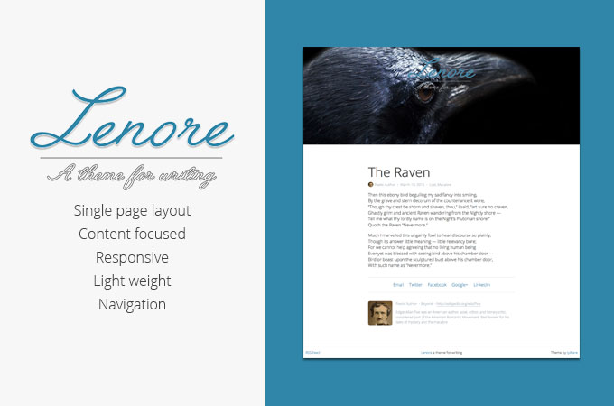
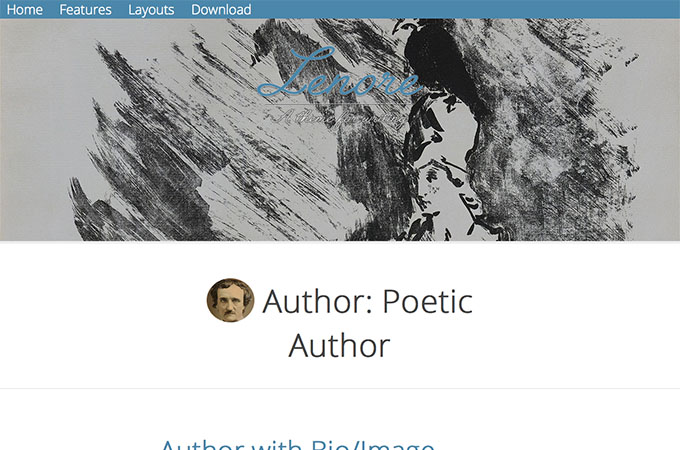
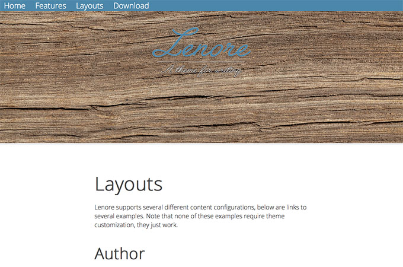
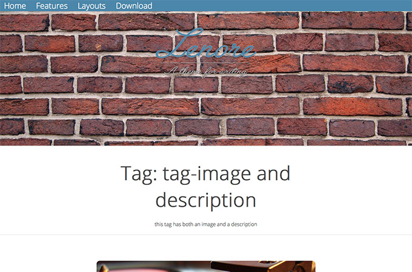
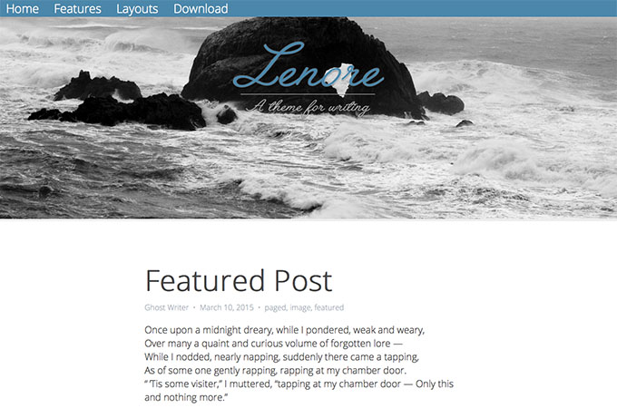

Ghost Theme Lenore
 Danny Wahl
•
•
Danny Wahl
•
•
Ghost is a blogging platform. Lenore is a theme designed to showcase writing and as such most of its features are about what it doesn't do.

Demo
A demo site of this theme is available at lenore.iyware.com
Features
- Ghost 0.5.10 compatible:
- Images [logo, blog cover, author, post, tag]
- Tags
- Pages
- Featured Posts
- Navigation
- Code Injection
- Dynamic rem/em based root/compontent/element sizing
- 1.9KB of CSS (inluding normalize.css!)
- woff2 font with woff fallback (read more)
- 19 social sharing links
- Email, twitter, Facebook, Google+, LinkedIn enabled by default
- Uncomment others in
post.hbs
- HTML Validated with Nu HTML Checker
- Insanely easy to customize:
- lightweight CSS specification
- shallow nesting
- no IDs
Un-features
- Exactly one layout. Use it with or without images, logos, descriptions, bios; it looks great with any options- and you don't have to edit a thing, it just works.
- No grid
- No JavaScript
- No images
- No external resources!
- No shims, fallbacks, or browser hacks ‐ because you don't need them
Browser Compatiblity
✓Firefox
✓Safari
✓Chrome
✓IE9
✓iOS Safari 7
✓Opera
✓Android
✓Vivaldi
Layouts
Lenore supports several different content configurations, below are links to some examples. Note that none of these examples require theme customization, they just work.
Author

Author archive: ✓image, ✓cover
Author archive: ✗image, ✗cover
Author post: ✓with bio
Author post: ✗bio
Page

Tag Archive

Tag archive: ✓image, ✓description
Tag archive: ✗image, ✓description
Tag archive: ✓image, ✗description
Tag archive: ✗image, ✗description
Post

Post: ✓image
Post: ✗image
Post: ✓tags
Post: ✗tags
Customization
Lenore is easy to customize and everything you want to customize is commented in the file you need to edit.
Stylesheets
The CSS has a table of contents and comments labeled inline. Want to change the link color? Find it in the table of contents and search for it. It's this easy:
a {
color: #4b87aa; /*<==11*/
text-decoration: none;
transition: all 0.25s;
}
a:hover,
a:focus,
a:active{
color: #068bd8; /*<==12*/
}
Or how about the max-width of post content?
article {
max-width: 34rem; /*<==06*/
}
Social Sharing
There are also a number of social sharing links in post.hbs. By default only 5 are enabled. To enable or disable different networks, simply uncomment them by removing the handlebars around the <li> elements:
{{!--REDDIT
<li><a class="reddit" href="http://www.reddit.com/submit/?url={{@blog.url}}{{url}}">reddit</a></li>
--}}
becomes:
<li><a class="reddit" href="http://www.reddit.com/submit/?url={{@blog.url}}{{url}}">reddit</a></li>
All social networks have a helper class for ease of styling. In total there are 19 sharing options provided.
Download & Support
Lenore is available for download on github and support is provided via github issues.